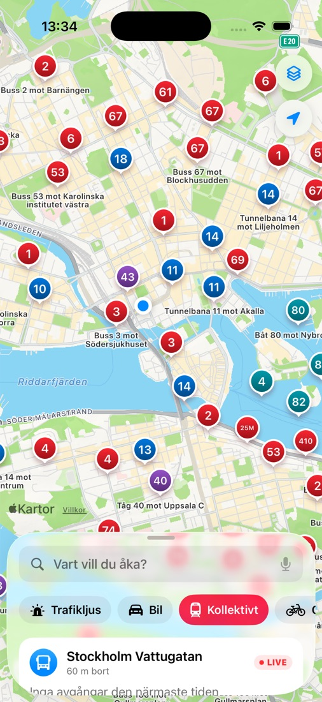
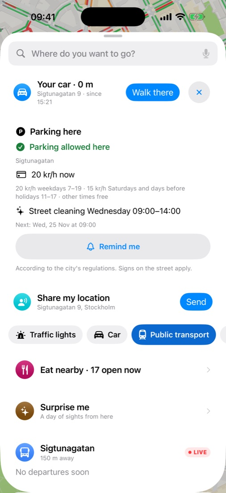

一张地图，实时看瑞典。
360Maps 专为游览瑞典而做。找到必看景点，乘坐公交车、火车和船只，查看交通、天气和停车情况，还能获得语音导航，支持 28 种语言，适用于 iPhone。
地图上有什么
打开您需要的图层。所有内容都来自政府部门和交通运营商的开放数据，并在您查看时实时更新。
-
景点
瑞典 340 多个必看景点，附有照片、营业时间、Look Around 和您所用语言的简短介绍。照片来自 Wikimedia Commons，文字来自 Wikipedia。
-
精选地点
我们为游客挑选的地点，例如斯德哥尔摩的意大利人推荐的意式浓缩咖啡吧。无论缩放到什么级别，它们都会显示。
-
餐厅、咖啡馆和酒吧
各有各的颜色，附营业时间，点按一组地点还会显示列表。瑞典全境约 20,000 个地点。
-
药店和急诊
瑞典全境的药店和医院急诊科，附营业时间。遇到紧急情况，请拨打 112。
-
游泳地点、自然和极光
带有今日水温的海滩、国家公园、自然保护区和溜冰场，以及看到极光的概率。
-
公交车、地铁、火车和船只
车辆带着线路号码在地图上移动，覆盖 15 个郡。红色是公交车，蓝色是地铁，紫色是火车，青绿色是船只。
-
拥堵和行程时间
斯德哥尔摩主要道路和隧道的实测行程时间，每分钟更新。拥堵会显示为比正常多 +2 分钟。
-
路况
道路上的积雪、雪泥和结冰以线条显示，并说明路面状况以及上次除雪的时间。
-
雨量雷达
来自 SMHI 气象雷达的当前降水，每五分钟更新。蓝色表示较弱，黄色和红色表示较强。
-
交通干扰和道路施工
来自瑞典交通管理局的事故、封路和道路施工信息，附地点和时间。
-
交通摄像头
点按摄像头即可查看路况画面。您查看时，画面会自动刷新。
-
渡轮和船舶
瑞典交通管理局公路渡轮的下一班发船时间，以及海上航行的船舶。
-
目的地附近停车
规划驾车行程时，可以查看目的地附近的停车场，附车位数量和价格。在城市公开共享空位数据的地方，还会显示空余车位。
-
路上的交通信号灯
驾车时显示下一个交通信号灯的位置。等城市公开其信号数据后，将会加入灯色和倒计时。
-
警方、Krisinformation 和 SMHI
您所在地的事件、重要的公共通告和天气预警。
应用长什么样
来自应用的图片，使用真实数据拍摄。截图显示的是瑞典语版本。



从 A 到 B
- 驾车
- 公共交通
- 骑行
- 步行
选择您的出行方式。360Maps 会结合当前交通状况比较各条路线，并显示沿途情况：拥堵、路况、道路施工、渡轮和交通信号灯。乘坐公共交通时，您可以看到瑞典全境的发车时间、延误和换乘。
驾车、骑行或步行时，下一个转弯会语音播报，即使锁屏也一样。如果您走错了路，应用会重新规划路线；如果找到至少快三分钟的路线，也会告诉您。接近目的地时，您可以看到在哪里停车。
一日游

给我惊喜
应用会从您所在的位置出发规划一天：景点和公园，午餐和咖啡安排在营业中的地点。选择步行、骑行或公共交通，再不断换一换，直到这一天合您心意。
博物馆、宫殿和教堂安排在 17:00 之前，因为应用不知道它们的营业时间。
要赶公交车或火车？点按该班次并选择“带我准时到达”，应用会告诉您何时出发。
瑞典实用须知
紧急电话一键即达，今天的日出和日落，瑞典的公共假日及当天哪些场所休息，付款和小费，Systembolaget，自来水，电源插头，以及公共通行权（Allemansrätten）。还有按欧洲中央银行汇率计算的克朗换算器，以及十二句会朗读的瑞典语常用语，并附有您所用语言的含义。
晚上，应用会列出您附近仍在营业的博物馆和景点；当快要下雨时，则列出可以改去的博物馆和教堂。免费入场的地方都有标注。
免费版和 360Maps Plus
包含所有图层的地图、搜索、公共交通、骑行、步行、“给我惊喜”以及规划驾车路线均免费。您的前三次驾车导航行程也免费。
使用 360Maps Plus，您可获得驾车导航：逐个转弯语音播报，拥堵、结冰和道路施工预警，交通变化时自动换新路线。还有这些：

行程费用和冬季检查
驾车路线上的拥堵税和过桥费，按您经过的时间计算，以及如果晚些出发需要多少费用。
11 月 1 日至 4 月 30 日：沿途的结冰和积雪、您抵达时所在地的气温，以及 SMHI 的预警。

斯德哥尔摩的停车规则
放大地图后，路缘会着色：绿色表示可以停车，橙色表示一天内会清扫街道，红色表示现在禁止停车，灰色表示该位置已被预留。
依据市政规定。以街上的标志为准。

车停在哪里
保存车辆位置，应用会显示该处适用的规定：当前价格、完整收费标准以及街道清扫时间。
“提醒我”会在街道清扫开始的前一天晚上和一小时前发出通知。
Plus 提供一周（非订阅）、按月、按年或一次性购买。App Store 会显示您所在国家/地区的价格。使用条款。
开放数据
地图上的所有内容均来自瑞典政府部门和交通公司的开放数据。
来源包括：Trafiklab 和 Samtrafiken、SL、瑞典交通管理局、SMHI、瑞典警方、Krisinformation.se、斯德哥尔摩市、Wikipedia 以及 © OpenStreetMap 贡献者。所有来源和许可均列在应用中的“来源、许可和隐私”下。
支持
发现了错误、地图上缺少内容，或对应用有疑问？请发送邮件至 raztechsupport@icloud.com，我们会回复。常见问题的解答在支持页面上。